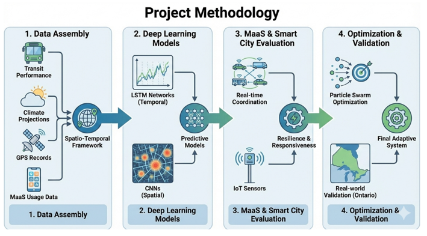
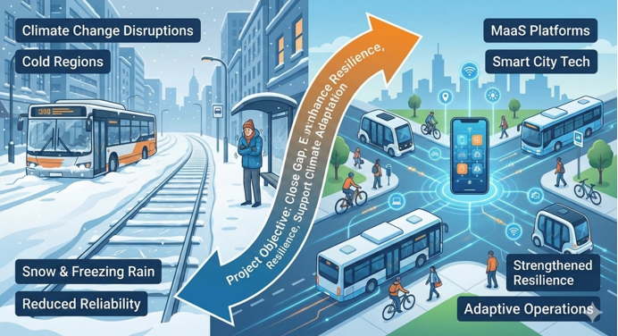

Objective
Climate change is creating growing disruptions for urban transportation systems, especially in cold regions where snowstorms, freezing rain, and rapid temperature shifts can degrade reliability and increase costs. This project seeks to close a key gap by clarifying how Mobility as a Service platforms and smart city technologies can strengthen resilience through better planning and adaptive operations. Building on prior work that used LSTM models and ridge regression to predict weather related transit delays, the research will extend these approaches to broader urban mobility systems and real time digital coordination. Overall, the objective is to develop advanced data driven methods and integrate emerging technologies to enhance transit resilience while supporting climate adaptation and sustainability goals.
Methodology
The study will first assemble multi source datasets, including transit performance, climate projections, GPS records, and MaaS usage data, then link them in a joint spatial and temporal analysis framework. It will develop deep learning models where LSTM networks capture sequential relationships between weather and delay dynamics, and CNNs identify spatial patterns and climate impact hotspots across the network. Next, the project will evaluate how MaaS can reduce disruptions through real time coordination, supported by smart city tools such as IoT sensors and data analytics to improve responsiveness. Finally, optimization models including particle swarm optimization will be used to allocate resources and adjust schedules in real time, with validation using real world data from Ontario and other comparable regions in collaboration with transit agencies and planners.
Expected Outcomes
This research will deliver advanced predictive capabilities that can be integrated into user friendly applications, enabling agencies to forecast disruptions and optimize response strategies in real time. It will demonstrate data driven integration of MaaS platforms and smart city tools, and produce an open data platform so stakeholders can access and apply the models across contexts. The methods will be designed to scale across different cities and transportation networks, allowing region specific solutions while remaining broadly transferable. The findings will be translated into actionable policy and operational decision support, including interactive dashboards and practical tools for building adaptive and resilient urban transit systems.


